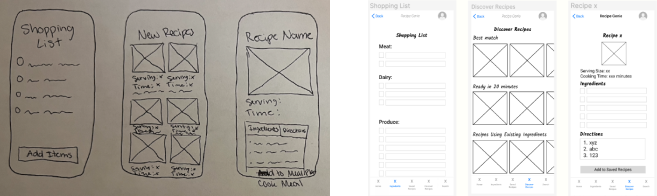
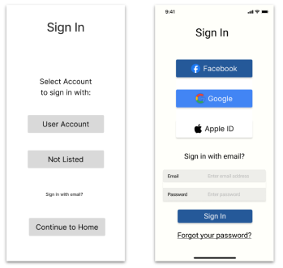

We interviewed five people to help understand how they currently make decisions about what to cook and how they utilize their ingredients for dinner preparations, how much time and effort they put into every dinner they make, how they currently make decisions about what to cook, and how they currently look into what makes up their individual ingredients. We found out people are most concerned about the time it will take for them to plan a meal and don't like going to the grocery store last minute. Coming up with new ideas for meals was also a noted frustration, as people don't want to be eating the same thing every week. The parents that we interviewed noted that they wanted to provide home cooked and healthy meals for their children as often as possible.
The problem: Busy people who enjoy a home cooked meal have a hard time finding the time and energy to fulfill this important need. Meal planning adds stress to their day and can result in lack of cooking their own meals.
We came to the insight that busy people need a simplified meal experience that optimizes existing ingredients because they want to save time while still making informed decisions about their meals to effortlessly create delicious dishes. We created a user persona, Lauren Miller, who is a married mother of two kids, has a busy lifestyle, and enjoys cooking quick and easy dinners. We focused on her and her lifestyle throughout the design process so we stayed true to what was important in our app creation.
We began our wireframes from scratch, starting out with just pen and paper. We created a sign up/sign in process along with the main recipe-generating content of the app. We then iterated these and created lo-fi digital wireframes and prototypes. After the testing outcomes we made our final prototype.
We did usability testing to see where users could potentially get stuck, and found out that some of our buttons were hard to read which made the sign up process difficult and frustrating. We made iterations with their notes in mind and created our final wireframes and clickable prototype.
Recipe Genie will greatly improve people’s cooking experiences by saving them time and aiding them in their decision making process. We believe home cooked meals do not need to be sacrificed. We focused on the “use your available ingredients” aspect of the app on this iteration of the prototype, but we would also like to create a section of the app where users could easily access information on the nutritional makeup of their food.
https://www.figma.com/file/CgflGKLfm2ntG5Ip24qGVa/Recipe-Genie-Wireframes%2FPrototype?type=design&node-id=38%3A677&mode=design&t=HnAyrk8nJ8N0Zpsi-1